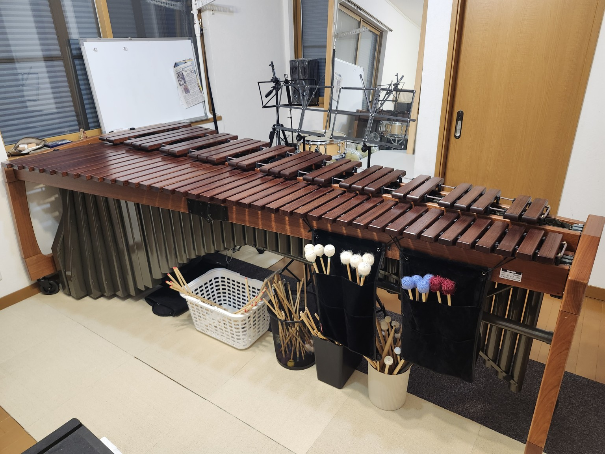
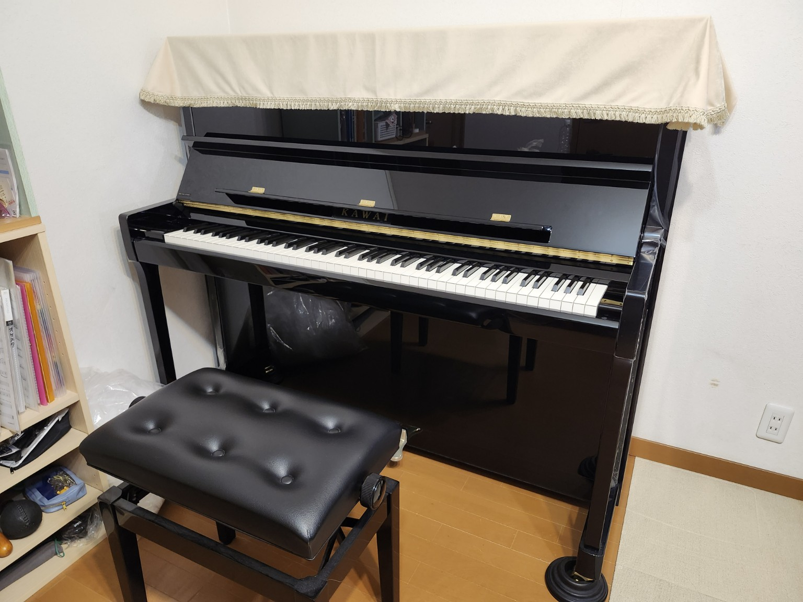

レッスンについて
マリンバを中心に、基礎練習、音の出し方、楽譜の読み方、曲の仕上げ方まで、 目的や経験に合わせてレッスンします。
講師プロフィール
植元 瑛子（うえもと あきこ）
滋賀県立石山高等学校音楽科、大阪教育大学教育協働学科芸術表現専攻音楽表現コース卒業。
在学中に池上英樹氏のマスタークラスを受講。
卒業後、神戸国際音楽コンクール本選に出場し、好評を博す。
その後、ドイツ・デトモルト音楽大学に半年間在籍し、研鑽を積む。
これまでに中路友恵氏、堀内吉昌氏、布谷史人氏に師事。
教室所在地
大阪府大阪狭山市茱萸木3丁目
南海バス「亀の甲」駅より徒歩6分
お車は自宅またはお近くのオークワにお停めいただけます。
詳細な住所はレッスンお申し込み時にお伝えいたします。
教室風景
教室にはマリンバとピアノを備えており、 ご希望に応じて、簡単なピアノレッスンにも対応しています。

